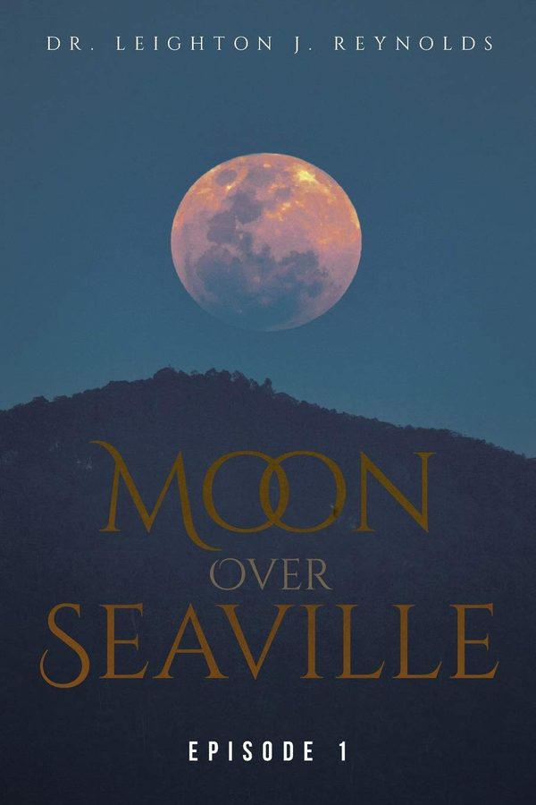

Episode 1
Seaville, California, north of Los Angeles
From the Other Side of the Moon
What burns
Dr. Roger Sterling’s two children are trapped at home behind a fire line, their nanny lying motionless on the garage floor. The only way to them is a steep two-mile run uphill, into smoke, wind and fire.
What it reveals
A week earlier, with eight fires in a month and the evidence burned, Sterling told Fire Chief Richard Bradford his idea: a serial arsonist might be tracked through the dynamics of the mind.